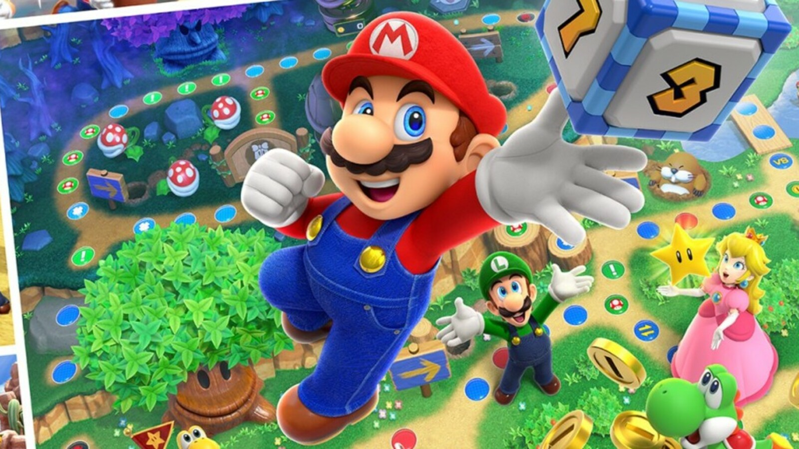
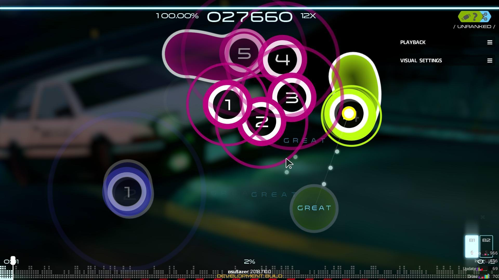

Vieojuegos
Juego, Franquicia, genero

Dark Souls 2

Mario en general

Musicales
Disfruto mucho de aprender en general y creo que por ese motivo disfruto tanto los juegos, actualmente estoy acabando el dark souls 2 que es parte de una de mis franquicias favoritas, pero si tuviera que recomendar una franquicia, sería la de Mario en general ya que juego que sacan juego que es bueno